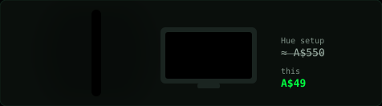

about
I'm a machine learning engineer and architect: from training generative models from scratch to designing AI systems that people can actually understand and trust.
I spent over three years at Accenture building AIOps tooling, explainable AI systems, and internal chatbots. At ANU, I'm going deeper into the foundations: generative modelling, transformers, and human-computer interaction. Now I work on two fronts: as Trainee ML Architect and System Engineer at Eccoi, on sovereign AI architecture, and as a Satellite AI Research Trainee at Haizea Analytics, mapping Australia's tree canopy from satellite imagery.
Alongside my studies, I teach Human-Computer Interaction at the ANU as a Casual Sessional Academic, serve as a Student Ambassador for the College of Systems and Society, and represent its postgraduate cohort as the elected ANUSA Postgraduate Representative. I've also published research on AI in material science, electric propulsion, and blockchain; see publications.
Long term, I want to build products that democratise machine learning: from national-scale AI capability to creative solutions for problems in grassroots communities.
skills
// click a skill to find out more
experience
the story behind these: how I work →Satellite AI Research Trainee
Mapping live tree canopy cover across Australia at 10 m resolution: deep learning models that read four years of quarterly Sentinel-2 imagery and are trained on airborne LiDAR measurements, across more than 13,000 footprints. The goal is accurate amounts of canopy, not just a good-looking map, scored once on a held-out test set against Haizea's existing model. Run as a pre-registered, multi-seed experiment programme where every change has to beat the noise floor, handed over as a clean repository with the model, validation code and a ranked record of experiments.
Trainee ML Architect and System Engineer
Architecting the Sovereign AI Community of Practice (SAICOP): defining architectural principles and the system context model, assessing and shortlisting platforms, and proving the conceptual architecture end-to-end, aligned to Australian Government delivery, security, and procurement realities. Exhibited SAICOP with the team at the Inaugural Australian AI Parliamentary Showcase at Parliament House in September 2026.
Casual Sessional Academic · Human-Computer Interaction
Teaching HCI at the ANU from Semester 2, 2026: running tutorials and supporting students through design thinking, prototyping, and evaluation coursework.
Advanced Application Engineering Analyst
Built Ingrain, an AIOps tool generating predictive ML pipelines for automated IT ticket resolution. Integrated Explainable AI and dynamic model-performance reporting, designing the supporting UIs from scratch. Built Quasar++, a ChatGPT API-based chatbot for querying internal documents. Formally Specialized in Data Science & Machine Learning; rated Advanced in Machine Learning, Python, UX Design, Solution Architecture, and Cloud Application Architecture.
Programmer Analyst
Designed and implemented full-stack web systems using .NET, MVC, React, HTML, CSS, and JavaScript; delivered a Hospital Logistics System to manage COVID-19 operational workflows.
projects
the story behind these: how I build →
Image Generation with Machine Learning
Flow matching from first principles: comparing v- vs x-prediction across data dimensions (x-prediction stays stable where v-prediction collapses), plus a MeanFlow implementation with Jacobian-vector-product targets.
x-prediction holds at 32 dimensions where v-prediction breaks.
† designed, implemented and evaluated every parameterisation

GPT from Scratch (nanoGPT)
A 30M-parameter GPT built from scratch in PyTorch and trained on just 3.7M tokens of five-sentence stories, testing depth vs width and RoPE + RMSNorm (25.77 → 24.67 PPL), plus DPO fine-tuning, in the data-scarce regime.
25.77 → 24.67 test perplexity. Depth beat width; SwiGLU didn't pay off at this scale.
† built, trained and ablated every variant

Transformers' Revenge
Stress-testing minGRU's "Were RNNs All We Needed?" claims against a LLaMA-recipe Transformer and a causal gMLP on algorithmic reasoning: a 27-experiment grid showing where each architecture breaks, plus a phase transition in Transformer copy learning.
Transformer ≥ 97% on induction at every length. minGRU: chance (~4%).
† team of four; built the Transformer, designed the experiments

FoodLens · Smart Food Scanner
A PWA for sustainable food shopping: real-time barcode scanning, live product lookup via Open Food Facts, allergen/expiry/carbon flagging, and A/B interaction logging for HCI research.
HCI research, demonstrated through a live, deployed app.

Lantern · Screen Sync for a A$49 Light
A Mac menu bar app that makes a cheap Bluetooth LED bar follow whatever is on screen, the feature Philips Hue sells for about A$550. I reverse-engineered the light's Bluetooth commands, calibrated LED colour against the screen, and shipped it with a website and a release.
The Hue screen-sync feature on a A$49 light.
† reverse-engineered the light, designed and built the app

linkedin-poster-mcp · Post from Claude
An MCP server that lets Claude publish LinkedIn posts with real photos, Page tags, hashtags and reposts, through LinkedIn's official API. Built after an automation platform quietly dropped the photos from one of my posts.
Draft with the assistant, decide yourself: nothing posts without an explicit yes.
† designed and built it, open source
SiteViews · Views in the Menu Bar
A Mac menu bar app that shows one number: total page views for this website, read from Cloudflare Web Analytics. Built after I caught myself opening the analytics dashboard every hour to check whether anyone had read a new post.
One glance, no dashboard, and a total that outlasts Cloudflare's six-month limit.
† designed and built it, open source
TokenEater · Multi-Account
Multi-account support for a macOS menu bar app that tracks Claude usage: every Claude account as a provider of its own across the menu bar, popover, dashboard and Studio. Built in my fork, contributed upstream as pull request #284, and rebuilt on my commits by the maintainer. Get it in the official TokenEater.
Upstream in TokenEater 6.1, out now as a beta.
† designed and built multi-account support

This Website
A portfolio that behaves like a terminal: an AI you can ask about me, answering only from what these pages say; scroll-driven animation; and write-ups that each come with something to play with.
Live at mayukhdas.com, with the chatbot running on free tiers.
† designed it and directed every decision; built with Claude Code
Yuma Social Platform
A native Android social app (post feed, reactions, DMs, and admin moderation) applying Singleton, Factory, and Iterator patterns across a layered DAO architecture.
† team of five; built the frontend, backend skeleton
HCI Design & Research
A portfolio of human-computer interaction work, including prototyping and AR system evaluation.
GrowthScope · First Hackathon
My first hackathon and first vibe-coded app (ANU, 2025): sales analytics for small businesses. Kept as a benchmark, and revisited in 2026 with tests, a self-scoring revenue forecast, anomaly detection, and fixes for what I first shipped.
Its own demo data: 41% analysed → 100%.
† hackathon team of four; rebuilt it solo
education
Master of Computing
Coursework in deep learning (CNNs, RNNs, transformers, generative models), advanced ML and generative AI (diffusion models, LLMs), statistical machine learning, HCI, and software engineering. Every coursework project on this site was graded High Distinction (HD).
B.Tech, Automobile Engineering
Published peer-reviewed research on electric propulsion for fixed-wing aircraft during undergraduate studies.
notes
1 AM notes: things I learned the hard way, written up while they were still keeping me awake.

Why I now post to LinkedIn from my terminal
I already used an AI assistant to sharpen my posts, so I gave it a way to post them, and a panel of three hiring managers to get past first.

A rule my agents can't break is code, not a sentence
I supervise my research project and take the major decisions; a dozen AI agents surface trends, debate ideas and formalise them. Written rules got broken 21 times; the ones turned into code did not.

No single AI policy can fit a whole university
Two hours of students arguing about AI in their courses. Both sides were right about some course and wrong about another, which is why the rule belongs with the convener.
videos
Pitches, research talks and demos, mostly me talking through the work.
Architecting SAICOP
My internship pitch: architecting SAICOP, the Sovereign AI Community of Practice, at Eccoi.
FoodLens: AR glasses vs phone
Does the right fact at the moment of purchase change what students buy? The study, the app and what we found.
A smartwatch for macaws
A paper prototype for a wearer with a beak: buttons, a pressure-sensitive screen and flight-first features.
publications
3 peer-reviewed papers · 58 citations · h-index 3 · Google Scholar → as of October 2026
the story behind these: how I research →An Overview on the Role of AI in Modern Advancements of Material Science
Das, M. · DOI 10.30919/esg1183. Also presented in work-in-progress form at RTCMM 2023.
Revolutionizing Organ Donation With Blockchain Technology
Momaya, V.J., Das, M. et al. · DOI 10.57159/gadl.jcmm.2.5.23071
Electric Propulsion for Fixed Wing Aircrafts: Classifications, Designs, and Challenges
Karthik, A., Das, M. et al. · DOI 10.30919/es8d573
student_roles
Postgraduate Representative
Elected representative for the CSS postgraduate cohort, advocating for student interests and liaising with faculty and administration.
Student Ambassador
Representing the College at recruitment events and school visits; supporting prospective-student transition and onboarding.
internships
Software Development Intern
Trained an ML pipeline on historical patient records for early detection of threatening conditions, reaching ~80% accuracy on malignant breast cancer detection.
Intern
Studied sensor-based mineral detection and drafted a feasibility study for automated coal grade determination using computer vision and AI.
Intern
Hands-on with just-in-time manufacturing; worked on CNC machine programming and cam design optimisation for higher efficiency using machine learning.
interests
Machine Learning
Generative models are my happy place: flow matching, diffusion, and transformers built from scratch in PyTorch. I like knowing what's under the hood, not just calling the API.
Problem Solving
Give me a gnarly problem and I'm gone for the afternoon: algorithm puzzles, debugging sessions that turn into detective stories, and systems that finally click at 2am.
Defence & Geopolitics
Where most of my free time goes: airpower doctrine, procurement politics, and how sovereign capability actually gets built rather than announced. An automobile engineer by first degree, so I read it as an engineering problem first. Hence the Rafale at the foot of the page.
History & Theology
Away from the screen: political history, theology, and an ever-growing queue of long-form analysis. I like understanding why institutions, ideas, and power move the way they do.
beyond_the_terminal
Staff Writer
Covered institute events and wrote long-form pieces on global issues; op-eds on the Me-Too movement and gun control received recognition and acclaim.
Event Organiser
Led teams of five to ten organising cultural-fest events (EQ-IQ, Psychology-101): ideation, logistics, and participant engagement for an inclusive atmosphere.
Volunteering & Outreach
Regular visits to a home for children with intellectual and developmental disabilities with the Rotary Club; sourced and distributed food, medicine, and rebuilding materials in West Bengal after Cyclone Amphan (2020).
get_in_touch
I'm open to opportunities in software engineering and machine learning, based in Canberra, ACT. Reach me by email or on LinkedIn.